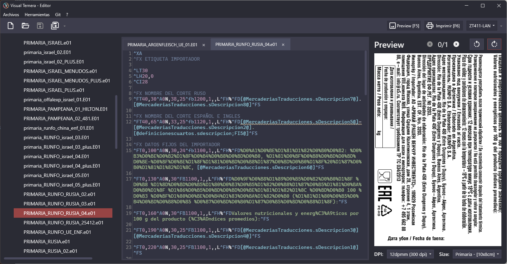
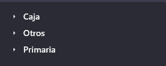
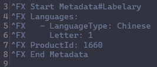

El propósito de esta función es editar y previsualizar etiquetas. Para lograr eso cuenta con multiples funciones.

Esta pantalla esta dividida en 3 sectores: Árbol, Editor y Preview.
Este árbol de archivos realiza una separación lógica entre distintos tipos de etiqueta. En este ejemplo separa las etiquetas de caja de las primarias, y toda etiqueta que no entre en ningún criterio va a parar a la sección 'Otros'.

Para poder configurar los criterios de separación ver como editar el archivo 'settings.yaml' en 4. Configuración
Permite editar las etiquetas abiertas por el Árbol o independientemente de el (Archivos -> Abrir), cuenta con soporte para abrir multiples archivos en simultaneo, syntax highlighting para el lenguaje ZPL, reporte de problemas en el código (linter) y metadata.
El editor ofrece la posibilidad de resaltar (subrayando en amarillo) los errores encontrados en el código de una etiqueta, pero es función del motor de previsualización analizar y reportar al editor que problemas se encontraron. Como motor de previsualización, Visual Ternera ofrece una implementación utilizando la API de Labelary.
El editor ofrece la posibilidad de cambiar el comportamiento de la previsualización generada mediante el uso de metadata.
Esta metadata se escribe como comentarios (^FX <...metadata...>) en el archivo de etiqueta como en el siguiente ejemplo:

La sintaxis esta definida por una linea de inicio y una de fin, en la primer linea se especifica para que motor de previsualización es compatible, y a continuación se definen los atributos de la metadata compatible con ese motor.
Start Metadata#<PreviewEngine><PreviewEngine.Property><PreviewEngine.Property>...End Metadata
Como motor de previsualización, Visual Ternera ofrece una implementación utilizando la API de Labelary, para ver que atributos permite este motor ver [3.X. INSERTAR LINK AL MODULO DE LABELARY].
El editor ofrece la posibilidad de previsualizar el resultado final de la etiqueta, permite rotar, alejar-acercar la imagen, cambiar tamaño y dpi, renderizar archivos con multiples etiquetas e imprimir a la impresora deseada.
También permite generar la previsualización cada vez que se guarda el archivo (Herramientas -> Vista previa al guardar).
⚠️ Es responsabilidad del motor de previsualización procesar el archivo y devolver el resultado para que el editor pueda generar la imagen.
{kind=link}